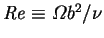
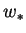
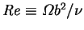
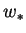
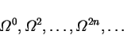

The inertial generation of a spanwise or axial flow by the viscous interaction of a rotating body of fluid and a perpendicular solid surface occurs in several areas of fluid mechanics, such as in curved rivers (Thomson 1876, 1877; Reynolds 1888; Falcón 1984; Johannesson & Parker 1989) and pipes (Thomson 1876; Eustice 1911; Dean, W. R. 1927; Patankar, Pratap and Spalding 1974; Jabbari, Burns & Goldstein 1998). The phenomenon is utilized in aquaculture to rid tanks of unwanted settleable solids (Timmons, Summerfelt & Vinci 1998; Peterson 1999). Perhaps its most familiar manifestation is the gathering of tea leaves at the centre of the bottom of the cup on stirring.
This last quotidian example is quite instructive. One immediately notices
that the tea leaves travel radially inward along the bottom and begin to rise
along the axis regardless of whether the tea is stirred clockwise or
anticlockwise; i.e. the secondary flow is independent of the sign of the
rotational speed,  , of the stirring. This implies
that the axial component of velocity at any point on the axis near the base
must be an even function of
, of the stirring. This implies
that the axial component of velocity at any point on the axis near the base
must be an even function of  . Assuming that for
sufficiently slow stirring, i.e. small Reynolds number
, the dimensional axial velocity, ,
can be expanded in a power series, it
will only contain the terms involving even powers of
. Assuming that for
sufficiently slow stirring, i.e. small Reynolds number
, the dimensional axial velocity, ,
can be expanded in a power series, it
will only contain the terms involving even powers of  :
:
|  | (8.1) |
The earliest scientific description of this general phenomenon seems to be Stokes's (1845). Of the motion of fluid between concentric coaxially rotating spheres (spherical Couette flow), he noted that motion in circular stream-lines about the axis of rotation was impossible unless the centrifugal force were neglected, whereas if it were included:
it is easy to see that from the excess of centrifugal force in the neighbourhood of the equator of the [inner] revolving sphere the particles in that part will recede from the sphere, and approach it again in the neighbourhood of the poles, and this circulating motion will be combined with a motion about the axis. (Stokes 1845)
Spherical Couette flow was later studied by Lamb (1932, p. 588), who gave the creeping flow limiting solution, and Munson and Joseph (1971), who presented results from an asymptotic expansion for low Reynolds number indicating the correctness of Stokes's and Lamb's predictions; in particular, the expansion for the motion in meridian planes involves only odd powers of the Reynolds number. There are also several recent numerical studies (Schwengels & Schulz 1989; Riad Mossad 1993; Ni & Nigro 1994; Nakabayashi & Tsuchida 1995; Zikanov 1996).
If the entire boundary of a fluid were rotating, the fluid, at steady state, would rotate as a solid body (Rayleigh 1913), in which case the effect of the centrifugal force would be to generate a pressure varying as the square of the azimuthal velocity (Lamb 1932, p. 28; Bird et al. 1960, pp. 96-8). With one end-wall fixed, the azimuthal velocity (and therefore the centrifugal force and consequent pressure) must vary axially. It is this axial variation in pressure which gives rise to the axial velocity. Now, the centrifugal force is inversely proportional to the radius of curvature of the azimuthal velocity. In the rotating cylinder this is simply equal to the distance from the axis, but if an analogy is drawn between Pao's problem and the buoyant flow in a cavity this need not be so. For a unicellular flow in a very tall cavity, the stream-lines sufficiently far from the horizontal surfaces will be practically straight, so that their radius of curvature is infinite and the centrifugal force vanishes. There is, therefore, no centrifugally generated pressure, no axial variation of centrifugally generated pressure and no force to cause axial/spanwise flow.
Of course, the temperature will also be independent of  in the fully
developed region so that the first (thermal) mechanism is eliminated too.
in the fully
developed region so that the first (thermal) mechanism is eliminated too.
The centrifugal force is proportional to the square of the
azimuthal velocity, and therefore must vanish faster than the primary
circulating flow as the speed scale,
 , tends to zero.
Thus, the second
(inertial) mechanism for spanwise flow in a confined convective roll vanishes
if either the stream-lines are straight or terms quadratic in the
velocity vanish (creeping flow).
, tends to zero.
Thus, the second
(inertial) mechanism for spanwise flow in a confined convective roll vanishes
if either the stream-lines are straight or terms quadratic in the
velocity vanish (creeping flow).